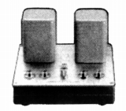
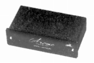
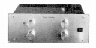
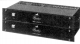

SHINDO-LABORATORY(新藤ラボラトリー)
1977年に登場した、真空管式セパレートアンプなどのブランド。2000年以降(*)も活動を続けていたようだ。現行商品の中にもアナログ関連機器がある。
*サイトの最終更新日は2009/5月
�T.昇圧トランス・フォノイコライザーアンプ
 (Model 101)

(昇圧トランス) Model 77 Model 101

Arome
  (左 7A 右 Martine)


(フォノイコライザーアンプ) 7A Martine